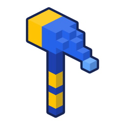
Vaikas kuria savo žaidimą
Kad vartai atsidarytų, reikia suskaičiuoti, perskaityti ar sugalvoti. Čia ekranas yra kūrybos įrankis.
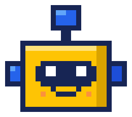
Vaikai Minecraft Education pasaulyje kuria mokomuosius žaidimus draugams: skaičiuoja, skaito ir pristato. DI valdo tik mentorius.
 mokykla / Tech Zity
mokykla / Tech ZityUžtruks apie minutę. Parašysime, kai jūsų mokykloje ar centre susirinks grupė.
Išbandykite: atidarykite tvirtovės vartusNėra oficiali Minecraft Education paslauga. Nesusijusi su Mojang ar Microsoft.
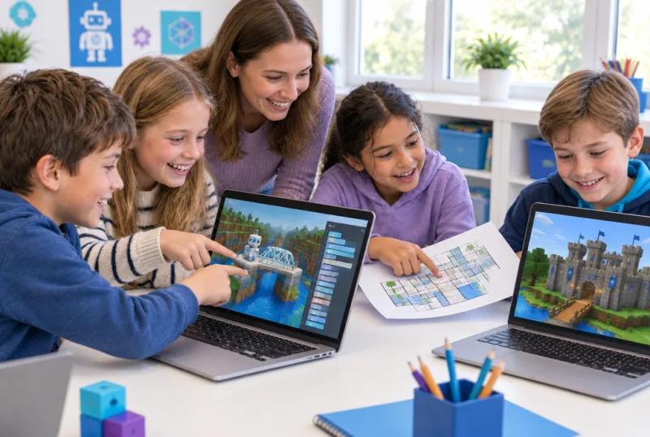
DI iliustracija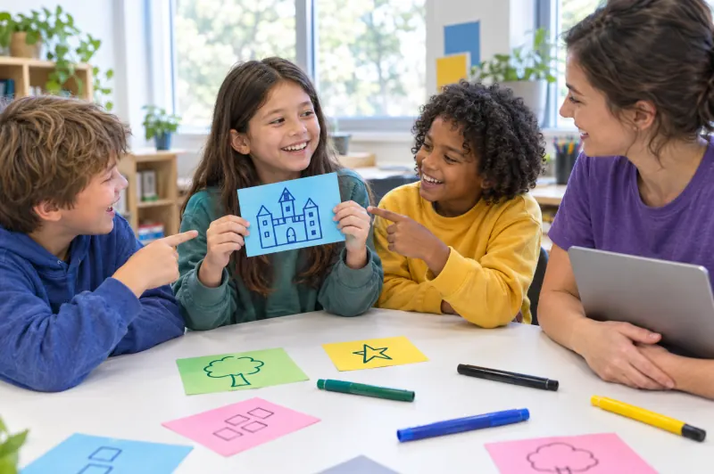
DI iliustracija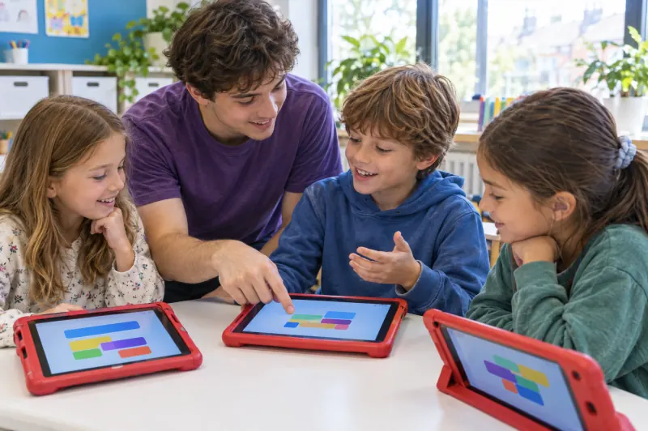
DI iliustracija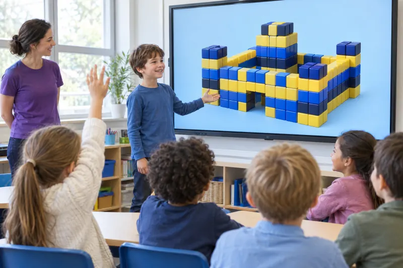
DI iliustracijaVaikas jau moka statyti. Čia jis išmoksta kurti žaidimus, kurie moko kitus.

Kad vartai atsidarytų, reikia suskaičiuoti, perskaityti ar sugalvoti. Čia ekranas yra kūrybos įrankis.
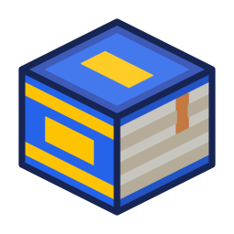
Mūsų ugdymo tikslas: kiekviena pamoka turi vieną aiškų skaitymo, matematikos ar gamtos uždavinį. Skiemenys ant blokų, daugyba sienose, gyvūnai savo aplinkoje.
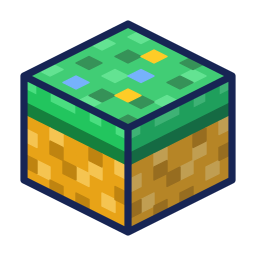
Kiekvienas vaikas dirba prie savo ekrano, todėl niekas neužgožia kito. Bazę stato visi kartu: pirmokai greta, vyresni pasiskirsto vaidmenis.
Lietuvos ketvirtokai skaito tarp 10 geriausių šalių (PIRLS 2021), bet labai mėgsta skaityti tik 22 % jų, kai tyrimo vidurkis 42 %. Norime, kad vaikas mokytųsi, nes jam įdomu. Šešios ugdymo kryptys, pagal kurias kuriame pamokų planus.
Suplanuok. Pastatyk. Išbandyk. Pataisyk.
Vaikas mokosi planuoti savo darbą ir pats taisyti klaidas.
1–2 kl. Pamoka prasideda trumpu klausimu „Ką prisimeni?“. Statybos planą sudarome kartu su mentoriumi, o pastatę patikriname, ar vartai atsidaro.
3–4 kl. Komanda pati suskaido užduotį į etapus. Pabaigoje viena minutė pokalbiui: kas buvo sunkiausia ir ką kitą kartą darysime kitaip.
Pirma rankomis, paskui ekrane
Tą pačią idėją vaikas sudėlioja rankomis, pastato ekrane ir paaiškina draugui.
1–2 kl. Skaičius ir formas pirmiausia dėliojame iš popierinių kubelių ant stalo, tada statome Minecraft Education pasaulyje ir užrašome žodį ant ženklo.
3–4 kl. Prisideda kodo blokai Code Builder įrankyje: programa stato pagal vaiko nurodymus.
Skaitome ir rašome, nes to reikia žaidimui
Kad žaidimas veiktų, vaikas perskaito užduotį, o 3–4 klasėje parašo ir taisykles kitiems.
1–2 kl. Žodžiai ir skiemenys ant blokų, užduoties kortelė ir „Skiemenų tiltas“: tiltas į salą statomas tik iš teisingų skiemenų.
3–4 kl. Vaikas parašo žaidimo taisykles ir užuominas draugams, o DI pamokoje savo idėją aprašo užklausos kortelėje.
Matematika, kurią galima pastatyti
Skaičiai čia turi prasmę: be teisingo atsakymo vartai neatsidaro.
1–2 kl. Skaičiuojame blokais, sudedame ir atimame: 1 klasėje iki 20, 2 klasėje iki 100. Pirmiausia rankomis, tada ekrane.
3–4 kl. „Daugybos tvirtovė“: siena iš 4 eilių po 6 blokus. Marso bazėje skaičiuojame plotą ir perimetrą, o 4 klasėje ir tūrį.
Žaidimą išbando draugai
Vaikas paaiškina kitiems savo žaidimą, o pusmečio pabaigoje parodo jį ir jums.
1–2 kl. Komandos keičiasi vietomis ir žaidžia vieni kitų žaidimus. Vaikas žodžiu paaiškina, kaip žaisti.
3–4 kl. Vaikas parašo taisykles, pristato komandos žaidimą grupei, o po pusmečio ir tėvams.
Laukia kitos misijos
Norime, kad vaikas lauktų kitos savaitės ir pats norėtų grįžti.
1–2 kl. Kas savaitę nauja misija iš Robotikos akademijos istorijų. Vaikas stato tai, kas jam įdomu, o mentorius giria už konkretų žingsnį.
3–4 kl. Komanda pati sugalvoja savo mokomąjį žaidimą. Draugai jį žaidžia, o portfelyje matyti, kaip auga vaiko žaidimai.
Keli keliai į tą pačią idėją. Per 45 minučių vaikas klauso istorijos, dėlioja rankomis, stato ekrane, rašo ir aiškina draugams. Lietuvos bendrosiose programose pirmokas ir antrokas mokosi tą pačią informaciją išreikšti piešiniais, tekstais ir skaitmenimis.
Pagal amžių. 1–2 klasėje idėjas keliame kartu su mentoriumi, o matematiką pirmiausia dėliojame rankomis. 3–4 klasėje vaikai užduotį skaido patys ir ieško kelių sprendimų. Jaunesni ir vyresni mokosi atskirose grupėse.
Būrelis ir mokykla. Lietuvos neformaliojo vaikų švietimo koncepcija numato, kad būrelyje vaikas ugdosi tas pačias 7 kompetencijas kaip ir mokykloje. Žaidimų kūrėjų būrelyje daugiausia dirbame su keturiomis iš jų: pažinimo, kūrybiškumo, komunikavimo ir skaitmenine.
Tai ugdymo tikslai, pagal kuriuos kuriame pamokų planus. Remiamės: Bendrosios programos (ŠMSM, 2022) · PIRLS 2021 (IEA) · Graham ir Hebert, 2011 · Bisra ir kt., 2018 · Clark ir kt., 2016. Tyrimų apie pačią programą dar nėra.
Keturių pamokų ciklas: trys Minecraft Education pasaulyje, ketvirta žaidimo kūrimas su DI. Pavyzdys 3–4 klasei: „Daugybos tvirtovė“. Tai pamokos plano pavyzdys, ne įrašas iš vykusios pamokos.
Trumpas klausimas apie praėjusią pamoką ir šios dienos istorija: audra sugriovė Marso bazės sieną, komanda gauna blokų normą.
3 eilės po 4 = 12. Stačiakampis iš popierinių kubelių ant stalo, dar be ekrano.
Pasaulis jau paruoštas. Mentorius patikrina, kad visi mato tą patį žemėlapį.
Kiekviena siena turi kortelę: 4×6, 5×5, 3×8. Vartai atsidaro tik tada, kai blokų skaičius teisingas.
Komanda pastato savo vartus ir užrašo klausimą ant ženklo. Tai ir rašymo pratimas.
Komandos keičiasi vietomis ir sprendžia svetimas sienas.
Kiekviena komanda parodo savo vartus ir atsako: „Kur gyvenime matai eiles × stulpelius?“ Kiaušinių dėklas, langai, šokolado plytelė.
Kas buvo sunkiausia ir ką kitą kartą darysime kitaip. Visi atsijungia, įranga lieka būrelyje.
Paspauskite blokus ir pastatykite sieną: 4 eilės po 6. Kai siena pilna, vartai atsidaro.Paspauskite blokus: 4 eilės po 6.
Vartai atsidaro tik tada, kai siena turi teisingą blokų skaičių. Daugybos lentelę vaikas pastato iš blokų. Išbandykite patys.
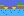
Tiltas į salą statomas tik iš teisingų skiemenų blokų.
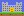
Vartai atsidaro, kai siena turi teisingą blokų skaičių: 4×6.

Kiekvienam gyvūnui tinkama aplinka, vanduo ir maistas.

Gaudyk raides iš eilės, kad sudėtum žodį. Žaidimas iš vaikų užduoties DI.
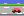
Mašina greitėja už kiekvieną teisingą atsakymą.

Saulės ir vėjo jėgainės, vanduo ir apsauga nuo smėlio audros. 3–4 klasei.
Pavyzdinės misijos iš programos. Piešiniai mūsų pačių, pasauliai statomi pamokose.
Programos tikslai pagal klasę. Pasirinkite klasę.
Trumpai tėvams: kuo skiriasi nuo žaidimo namie ir kuo naudinga.
Atskira Minecraft versija mokykloms ir būreliams. Microsoft duomenimis, joje daugiau nei 600 pamokų, kodavimo įrankis Code Builder ir mokytojo valdymas.
Vaikui nereikia savo Microsoft paskyros: prisijungimą suteikia būrelis. Mentorius valdo pasaulį: gali sustabdyti, perkelti ar surinkti visus vaikus vienu mygtuku.
Vaikas atlieka misiją: skaičiuoja, planuoja, rašo, programuoja ir dirba komandoje. Atvirai: tyrimai apie Minecraft mokymąsi dar nėra tvirti, todėl pažymių pokyčio nežadame. Žadame tai, ką matysite: ką vaikas sukūrė ir kaip jis tai paaiškina.
Pasaulio ekonomikos forumas 2025 m. apklausė daugiau nei 1 000 darbdavių 55 ekonomikose. Tarp įgūdžių, kurių svarba iki 2030 m. auga sparčiausiai, yra technologinis raštingumas, kūrybinis mąstymas, atsparumas ir smalsumas. WEF 2025: 1 000+ darbdavių, 55 ekonomikos.7–10 metų vaikui jie prasideda nuo žaidimo, kurį jis kuria su komanda ir mentoriumi.
69 %, 1 vieta · augimas iki 2030 m. +55
Skaičiuoja ir matuoja, o daugyba virsta blokų siena.
1–2 kl. pirma rankomis su kubeliais · 3–4 kl. ieško kelių sprendimo būdų
67 %, 2 vieta · +66
Kai vartai neatsidaro, komanda ieško klaidos ir bando dar kartą.
1–2 kl. tęsia, kai padrąsina mentorius · 3–4 kl. sprendimų ieško pati
57 %, 4 vieta · +66
Sugalvoja ir pastato mokomąjį žaidimą draugams.
1–2 kl. idėją keliame kartu su mentoriumi · 3–4 kl. komanda sugalvoja pati
51 %, 6 vieta · +68
Stato Minecraft Education pasaulyje ir programuoja Code Builder įrankiu. DI pamokoje kartu su mentoriumi tikrina, ką sukūrė DI.
1–2 kl. komandų seka pagal užduotį · 3–4 kl. kodas su kartojimais ir sąlygomis
50 %, 8 vieta · +61
Kas savaitę nauja misija. Pamoka prasideda klausimu „Ką prisimeni?“.
1–2 kl. kartoja ir planuoja su pagalba · 3–4 kl. skaido užduotį į etapus
50 %, 7 vieta · +46, iki 2030 m. stabilus
Žaidžia draugo žaidimą, išklauso ir pasiūlo, ką pataisyti.
1–2 kl. laikosi sąžiningo žaidimo taisyklių · 3–4 kl. atsakingai atlieka savo vaidmenį komandoje
Pagal amžių. 1–2 klasėje vaikas tęsia darbą, kai padrąsina mentorius, o 3–4 klasėje sprendimų jau ieško pats. Tai ugdymo tikslai. Pažymių pokyčio nežadame.
Lietuvos programos. Lietuvos bendrosiose programose juos atitinka 7 kompetencijos, tarp jų pažinimo, kūrybiškumo, komunikavimo ir skaitmeninė. Neformaliojo vaikų švietimo koncepcija jas numato ir būreliams. Bendrųjų programų kompetencijos
Ko čia nėra. DI ir lyderystė čia tik pradmenys. DI įrankius valdo mentorius, o vaikas mokosi aprašyti idėją žodžiais ir pastebėti, kur DI suklydo. 3–4 klasėje siekiame, kad vaikas vadovautų vienai užduočiai komandoje.
Trys ataskaitos, panašūs įgūdžiai. WEF ataskaitose 2020, 2023 ir 2025 m. kartojasi analitinis ir kūrybinis mąstymas, atsparumas, technologijos ir mokymasis. 2020 m. jis vadintas aktyviu mokymusi ir mokymosi strategijomis, o 2023 ir 2025 m. smalsumu ir mokymusi visą gyvenimą.
„+N“ = WEF grynasis augimas: darbdavių, manančių, kad įgūdžio svarba iki 2030 m. augs, dalis minus manančių, kad mažės, procentiniais punktais. Lietuviški pavadinimai yra mūsų vertimas. WEF ataskaita yra darbdavių apklausa apie suaugusiųjų darbą. Su vaiko amžiumi įgūdžius siejame mes patys. Šios organizacijos mūsų programos nevertino.
Taisyklės, kurių laikomės kiekvienoje pamokoje.
Vaikui nereikia savo Microsoft paskyros: prisijungimą suteikia būrelis.

Vaikai neturi ChatGPT ar kitų DI paskyrų. Jokio vaiko vardo, nuotraukos ar balso į DI įrankius.

Renkame tik tai, ko reikia grupei suburti: kontaktą, vaiko klasę, vietą ir patogias dienas. Seansų įrašai įsijungia tik jums leidus.
Kas kuria programą. Programą kuria Robotikos akademijos ugdymo turinio komanda. Pamokas veda mūsų mentoriai, praėję Minecraft Education mokymus.Programą kuria Robotikos akademijos ugdymo turinio komanda. Pamokas veda mūsų mentoriai, praėję Minecraft Education mokymus. Visas programas tobuliname pagal 13 metų būrelių patirtį, mentorių ataskaitas po kiekvienos pamokos ir tėvų nuomonę.
Vaikų technologinio ugdymo organizacija, įregistruota 2013 m. Robotikos ir skaitmeninių technologijų būreliai darželiuose, mokyklose ir centruose visoje Lietuvoje. robotikosakademija.lt
Atsiliepimai: pavyzdžiai, kol surinksime tikrus
Čia bus tikras tėvų atsiliepimas po pirmųjų pamokų: ką vaikas pasakojo namie ir kas jums buvo svarbiausia.
Čia bus vaiko žodžiai: ką jis pastatė, kas buvo sunkiausia ir ką norėtų kurti kitą kartą.
Čia bus mentoriaus žodžiai: kaip vyksta pamoka, ką vaikai daro patys ir kur jiems reikia pagalbos.
Kaina už 4 pamokas po 45 min per mėnesį. Vieta priklauso nuo to, kur susirenka grupė.
Startas. Grupės startuoja, kai susirenka pakankamai vaikų. Laukiančiųjų sąraše esantiems pranešime pirmiesiems.
Sutartį, tvarkaraštį ir mokėjimo sąlygas atsiųsime prieš registraciją. Sąrašas niekuo neįpareigoja.
Popietėmis po pamokų, kartą per savaitę. Dieną renkatės formoje, laiką derinsime pagal daugumą. .
Mokyklos vadovams, pavaduotojams ugdymui ir būrelių koordinatoriams. Tėvams tai patogiausia vieta: vaikas lieka mokykloje, vežioti nereikia.
Grupės dydį ir pradžios datą suderiname su mokykla. Robotikos akademijos būreliai jau vyksta daugiau nei 650 vietų Lietuvoje. Minecraft Education veikia Windows, macOS, ChromeOS (Chromebook) ir iPad įrenginiuose; įdiegimą ir prisijungimus suderiname su mokyklos IT.
Atsakome tiesiai, įskaitant tai, ko dar nežinome.
Mokykloje 25 €, Tech Zity centre 39 € per mėnesį už 4 pamokas po 45 min. Įskaičiuota: įranga vietoje (Mokykloje mokyklos kompiuteriai, centre mūsų planšetės ar kompiuteriai), programa, paruošti pasauliai ir mentorius. Sutartį ir mokėjimo sąlygas atsiųsime prieš registraciją.
Popietėmis po pamokų, 45 min, kartą per savaitę. Pirmoji grupė renkama Tech Zity centre Vilniuje ir mokyklose, kurios mus pakviečia. Formoje pažymite, kurios dienos jums tinka, o dieną ir laiką derinsime pagal daugumą.
Laukiančiųjų sąrašas niekuo neįpareigoja. Prieš registraciją gausite sutartį, tvarkaraštį ir mokėjimo sąlygas, ir tik tada nuspręsite.
Čia jis kuria žaidimą su užduotimi: skaičiuoja, skaito ir aiškina kitiems. 45 minutės per savaitę su mentoriumi ir komanda, paruošti pasauliai su mokymosi užduotimis. Namie vaikas dažniausiai stato vienas.
Dirbame komandomis po 2–3, mentorius suskirsto pats. Pirmą pamoką vaikas gali tik stebėti ir prisijungti, kai pats norės. Kiekvienas vaikas dirba prie savo ekrano.
Ne pats. DI įrankius valdo tik mentorius savo ekrane. Vaikai neturi paskyrų ir jokių savo duomenų į DI nesuveda. Vaikas mokosi aprašyti idėją žodžiais ir pastebėti, kur DI suklydo.
To nežadame. Didelis Minecraft Education tyrimas su kontroline grupe erdvinio mąstymo pagerėjimo nerado, o tyrimų apžvalga rodo, kad skaitymui programavimas padeda mažiausiai. Žadame tai, ką matysite: ką vaikas sukūrė ir kaip tai paaiškina.
Vaikui nereikia savo Microsoft paskyros: prisijungimą suteikia būrelis. DI įrankius valdo tik mentorius savo ekrane. Renkame tik tai, ko reikia grupei suburti: kontaktą, vaiko klasę, vietą ir patogias dienas. Vaiko vardo neprašome. Seansų įrašai įsijungia tik jums leidus.
Ne. Kiekvienas vaikas prie savo ekrano: mokykloje prie mokyklos kompiuterio, Tech Zity centre prie mūsų planšetės ar kompiuterio. Be vaiko paskyros, DI tik per mentorių. Minecraft Education veikia Windows, macOS, ChromeOS (Chromebook) ir iPad įrenginiuose.
Tiks. Kiekvienas vaikas idėją pirmiausia sudėlioja rankomis ir tik tada stato ekrane. Pabaigoje ją paaiškina draugui. Vieno būdo rinktis nereikia. Tyrimai rodo, kad žodis kartu su paveikslėliu ir gestais padeda suprasti geriau nei vien žodis.
Abu tinka. Pirmoji pamoka moko valdymo, o mentorius turi pradžiamokslį kiekvienam įrenginiui. Ekspertai gauna sunkesnes užduotis, pavyzdžiui, grandines ar kodą, ir padeda kitiems. Paaiškinti kitam irgi yra įgūdis.
Žaidimų kūrėjai yra neformaliojo vaikų švietimo būrelis. Jį siejame su Lietuvos bendrųjų programų kompetencijomis, daugiausia su keturiomis: pažinimo, kūrybiškumo, komunikavimo ir skaitmenine. Mokyklos pamokų nekartojame.
Ne. Tai Robotikos akademijos būrelis, kuriame naudojama Minecraft Education. Su Mojang ar Microsoft nesusijęs.
Programą kuria Robotikos akademijos ugdymo turinio komanda. Pamokas veda mūsų mentoriai, praėję Minecraft Education mokymus. Visas programas tobuliname pagal 13 metų būrelių patirtį, mentorių ataskaitas po kiekvienos pamokos ir tėvų nuomonę.
Keturi žingsniai, apie minutę. Parašysime, kai jūsų mokykloje ar Tech Zity centre susirinks grupė.
 Be įsipareigojimų ir be mokėjimo. Sutartį ir sąlygas gausite prieš registraciją.Vaiko vardo neprašome: tik klasė, vieta, patogios dienos ir jūsų kontaktas.Dirbate mokykloje? Pasirinkite „Mokyklai“ ir pakvieskite mus.Klausimai? +370 5 25 25 713
Be įsipareigojimų ir be mokėjimo. Sutartį ir sąlygas gausite prieš registraciją.Vaiko vardo neprašome: tik klasė, vieta, patogios dienos ir jūsų kontaktas.Dirbate mokykloje? Pasirinkite „Mokyklai“ ir pakvieskite mus.Klausimai? +370 5 25 25 713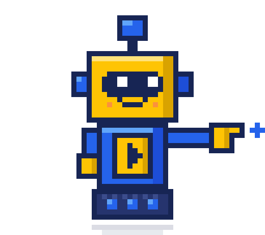
Vienas žingsnis. Susisieksime ir aptarsime, kada ir kaip būrelis galėtų vykti jūsų mokykloje.
Mokyklai tai nekainuoja: programą, mentorių, registraciją ir mokėjimus tvarko Robotikos akademija.Reikia tik klasės po pamokų su mokyklos kompiuteriais (Windows, macOS, ChromeOS ar iPad).Grupės dydį ir pradžios datą suderiname kartu.Klausimai? +370 5 25 25 713